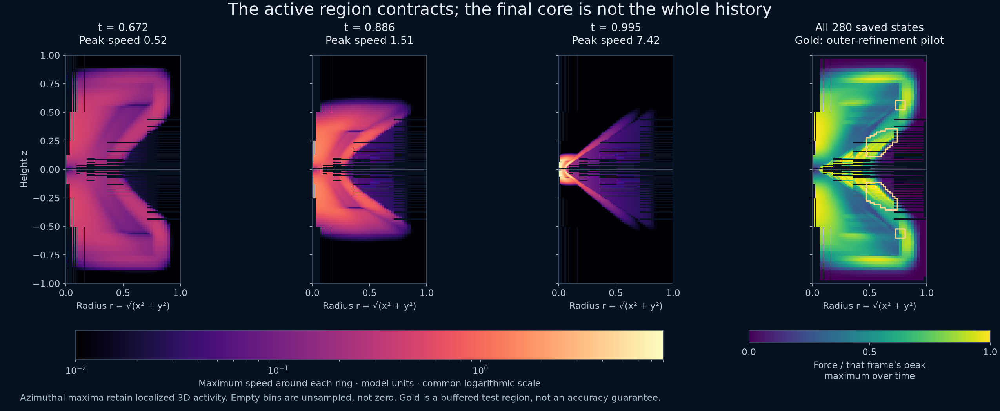

Guide 11 · September 17, 2026
Refine where the flow has been active.
The completed trajectory provides a measured footprint for the next mesh. It is not enough to refine only the final core: the velocity and forcing occupy a much wider region earlier in the evolution.
All 280 saved native states from Kay's completed run are included. The audit checks the original float64 velocity and force hashes, excludes covered coarse cells, recovers the full domain volume, and reproduces kinetic energy. It then measures velocity, force, and their spatial variation in radial–axial bins. The maximum around each ring retains localized azimuthal features; a ring average could hide them. This is a design projection of a fully three-dimensional field, not an axisymmetric simulation.

A flared region, not an assumed paraboloid
The implemented similarity map gives an independent geometric check. Write τ = 1 − t, D = ½ − h, and use the model's radial and axial scales R and H:
q = τ + (z/H)²q2h.
At h = 0, a constant-X surface therefore satisfies r² = 2R²X[τ + z²/H²]. This has a hyperboloid-like throat, not a parabolic profile. The implemented h = 0.008 slightly changes that shape. Pulse support, localization, background flow, and the evolved response add further structure. The mesh should follow the measured footprint with buffers, while checking analytic phase scales for features the old mesh may have missed.
Keep the full 3D solver
The new tagger adds fixed radial–axial bands revolved around the z-axis to the existing nested cubes. AMReX turns these tags into Cartesian boxes with cubic cells. Azimuthal variation, all three velocity components, the full periodic domain, and the finest central spacing are retained. The bands are fixed before launch; no adaptive regridding or coordinate stretching is introduced.
A bin is selected when either velocity or force exceeds a chosen fraction of that frame's peak and its local change estimate, Δx‖∇v‖, exceeds another fraction of the same peak. The selected bins are united over time, expanded by at least two parent-cell widths, and supplied with ancestor coverage. Gradients use second-order level-local differences with one-sided patch-edge stencils. These are placement indicators, not residuals, truncation errors, or certified tolerances.
The memory tradeoff
| Layout | Stored cells | Meaning |
|---|---|---|
| Completed Kay mesh | 10.49 million | Measured baseline allocation |
| All-level activity union, lower thresholds | 83.80 million | Geometric estimate before box overhead |
| All-level activity union, higher thresholds | 42.03 million | Geometric estimate before box overhead |
| Selected outer-band experiment | 11.13 million | Geometric estimate |
| Selected experiment after AMReX boxing | 12.06 million | Measured full-size allocation |
The all-level unions do not fit safely on a 16 GiB Mac. The first controlled experiment instead extends only the outer refined level, selecting amplitude at least 0.75 of the frame peak and per-cell variation at least 0.5 of that peak. It adds 27 buffered bands while preserving every core cube. The selected regions receive Δx = 1/128 rather than the base spacing 1/64; the central spacing remains 1/1024. Box padding makes the measured increase about 15%, larger than the 6% geometric estimate. This is a targeted sensitivity test, not complete coverage of every active structure.
Checks before the long trajectory
The continuous manufactured flow u = t(sin πy, sin πz, sin πx) exercises the new ragged hierarchy independently of the paper surrogate. The first 16³-to-32³ comparison failed: L² error increased from 9.67 × 10−6 to 2.15 × 10−5. The coarse meshes realize different box coverage, so that pair does not establish convergence. The failure is retained. A subsequent 32³-to-64³ pair reduces error to 6.80 × 10−6, a ratio of 3.16; changing the box decomposition changes that error by 2.28 × 10−12. This passing pair is useful evidence, not a complete asymptotic study.
Every pilot also reads back all six native components. A block-wise float64 export preserves irregular level coverage without filling holes, interpolation, or downsampling; independent active-cell volume, peak speed, and energy checks agree with the solver. Restart reproduces each final velocity field with zero measured difference. Existing rectangular-level exports remain available for the completed Kay movies.
Separate local source sensors at t = 0.67, 0.775, and 0.9 compare aligned Δx, Δx/2, and Δx/4 patches. In the outer-level subset, the aggregated force differences decrease on the second refinement but remain appreciable. These overlapping sensors are neither global error norms nor proof that all selected bands are adequate. The mesh-dependent surrogate force changes when spacing changes, so the experiment measures combined source and solution sensitivity.
Oliver's full-size activation preflight completed from exact rest through 0.551 in 15 steps, retained all three requested native states, and passed force readback. Peak RSS was 4,994.94 MiB, about 4.88 GiB. The force is still extremely small at that endpoint; this checks allocation and archive handling, not late-time accuracy or a late-time memory bound.
The next run
The outer-band experiment launched on Oliver from rest, targeting the same t = 0.995 endpoint and the same 280-state output clock as Kay. Maximum timestep 0.00025, forcing-phase ceiling 0.0375, profile, viscosity, derivative-window rule, and core spacing are unchanged. Four solver threads and two force threads limit scratch memory. The run retains all native velocity and forcing voxels and has an 11.5 GiB process-RSS stop threshold and a 20 GiB free-disk reserve, sampled every five seconds. Its launch snapshot is not a live progress counter.
The native field budget is approximately 150.9 GiB. The preflight reserves a 256 GiB working budget plus the separate 20 GiB free reserve on Oliver; approximately 431.6 GiB was free before launch. Kay's original archive remains untouched. The new run is an experiment and does not replace the completed homepage result until its archive and spatial-sensitivity checks are reviewed.
Design, validation, source-sensor, capacity, and launch record · Pinned outer-band geometry
Reproduce the design
python -m scripts.audit_native_action \
--run outputs/kay-complete --prepared outputs/kay-prepared \
--exporter build/amrex-omp/ns_volume_export --output outputs/action-audit
python -m scripts.design_action_refinement \
--audit outputs/action-audit --source outputs/kay-complete/run.json \
--amplitude 0.75 --variation 0.5 --max-parent-level 0 \
--output outputs/outer-design
python -m scripts.revolved_mesh_pilot \
--build build/amrex-omp --bands outputs/outer-design/refinement.bands \
--base-n 32 --output outputs/outer-manufactured-checkUse fresh output directories. Native audit preparation must match the completed source and exporter hashes. The design thresholds and physical buffers are explicit, and the run pins the geometry file's hash. Extending this design beyond 0.995 would require a new coverage and temporal-accuracy assessment.